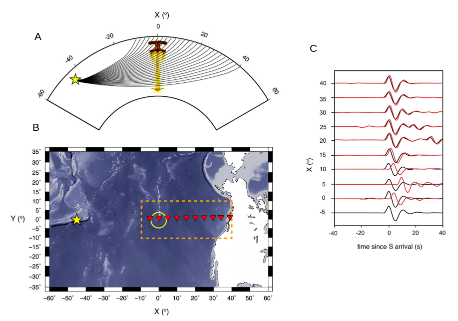
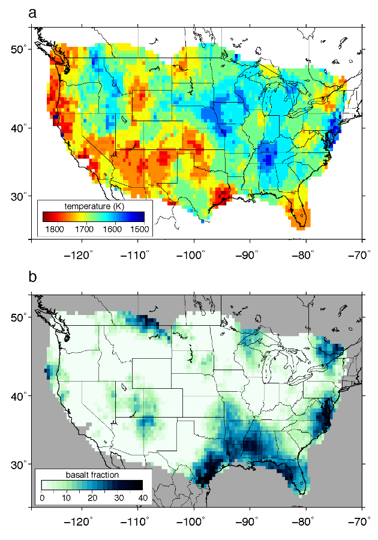
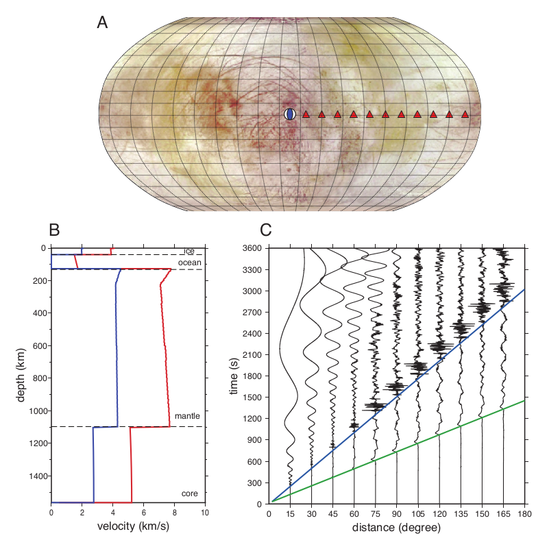

1. Seismic tomography of Yellowstone
Interpretations of previous tomographic images of Yellowstone are complicated by an incomplete understanding of how large crustal magmatic systems affect seismic waveforms. In particular, tomographic studies based on asymptotic methods may underestimate the seismic wave speed anomaly of the magma reservoir because first arriving energy may be diffracted around strong low wave speed anomalies. We are developing a new ambient noise based adjoint tomography inversion of Yellowstone’s crust and uppermost mantle which may overcome the limitations of previous studies by incorporating more realisitic sentivity kernels based on accurate 3D wave propagation physics.

2. Imaging plume tails
Mantle plumes are thought to be responsible for the unusual style of volcanism observed in locations such as Hawaii and Iceland, yet definitive geophysical observations of plumes remain elusive. Seismically imaging plume tails has proven difficult because they are narrow in diameter and often scarcely sampled by seismic waves recorded at Earth's surface. In order to get a better understanding of how plumes can be best imaged seismically, we conduct 'synthetic tomography' experiments in which we model the seismic structure of plumes by combining numerical simulations of plumes rising in the mantle with mineral physics constraints on seismic velocities. We then model body wave delay times caused by plume structures using numerical simulations of wave propagation and invert delay times to recover plume structure.

3. Temperature and composition of the mantle transition zone
Abrupt mineralogical phase transitions in the olivine family at about 410-km and 660-km depth delineate the Earth's mantle transition zone (MTZ). Since these phase transitions depend on temperature, pressure, and composition, their seismically observed depth and impedance contrast can provide clues to lateral thermochemical variation in Earth's mantle. We use the receiver function technique to map regional deflections of the MTZ phase boundaries and use mineral physics constraints to estimate thermochemical structure from our seismic images. These results can then be used to infer where subducting slabs or thermal upwellings have penetrated the transition zone.

4. Seismic modeling of icy moons
Scientific investigations of icy ocean worlds such as Europa and Enceladus are tantalizing due to the possibility that these worlds harbor life. In the coming years there is much interest in sending a lander to Europa with an onboard seismic instrument. Seismological investigations can prove useful because they may be able to constrain the thickness of the surface ice shell, or detect reflections from small pockets of liquid water within the ice. In anticipation of a coming lander mission, we simulate both global scale and local scale seismic wave propagation using self consistent models of Europa's interior in order to evaluate how well a broadband seismometer on Europa could perform, and determine what science goals we may hope to achieve.